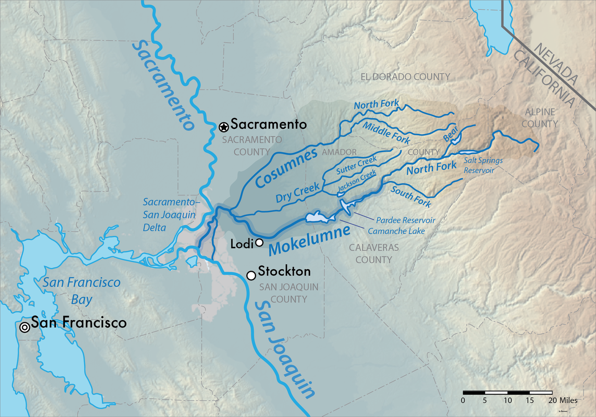

Background Research
1 UW-Madison Project Overview
Goal: evaluate and mitigate potential impacts and co-benefits of the Mokelumne water battery project, and evaluate alternative operations and configurations to improve environmental outcomes and stakeholder satisfaction.
- (NOT UW) modeling study of the combined thermal impacts of both climate change and a pumped-storage hydropower project proposed in the Mokelumne River in California
- climate induced changes in runoff regimes, particularly low flow periods, have potential to exert greater control on changing thermal regimes than warming climate or adverse impacts of reservoir operations
- increased storage provides an opportunity for environmental releases to counteract impacts to the thermal regimes during critical periods.
- develop a suite of potential scenarios describing a range of pumped-storage operations to identify practices that enhance, or minimize impacts on, thermal regimes of the reservoirs and downstream river reaches
- use historic and simulated future stream temperature records to apply a range of identified thermal niche models/ thermal tolerance metrics at locations downstream to determine the extent to which different strategies for describing individual species thermal niche agree in habitat outcomes
- (UW) conduct a literature review evaluating the temperature requirements of aquatic species to evaluate the significance of potential changes to the stream thermal regime
- includes a comparison of historic and forecasted future stream temperatures to thermal criteria set by resource agencies (NMFS) and whether these thermal criteria are achievable/realistic in a changing climate
- (UW) identify potential ecosystem co-benefits that could arise from innovative pumped-storage hydropower operations
- reduced thermal impairment of downstream river reaches
- reduced carbon emissions,
- maintenance of in-reservoir thermal regimes to support lake trout fisheries,
- enhanced streamflow during critical stages of the salmon life-cycle,
- increased availability of water rights,
- minimized flood risk,
- regulation of stream sediment transport,
- improvement of aquatic habitat,
- improvement in flow regimes to support downstream riparian vegetation and biota
Some mechanism to achieve co-benefits:
- alteration of the magnitude and timing of pump-storage operations,
- increased reservoir storage,
- floating solar power,
- variable depth of pumped water extraction and injection,
- altered timing of reservoir releases
2 Mokelumne River System
Mokelumne (“People of the Fish Net”) River runs 95-miles (153 km) in the Sierra Nevada Mountains (2,143 square miles (5,550 km2). The Upper Mokelumne River Basin and drains about 550 square miles (1,400 km2), or 25.7% of the total watershed.

2.1 Human modifications
- 1920: Upper Mokelumne River Hydro project (see Section 2.2)
- 1929: Pardee dam
- 1963: Camanche dam
- 1964: Mokelumne River Fish Hatchery
- Consumes River, the Mokelumne’s major tributary, is one of only a few Sierra rivers without large dams
2.2 Mokelumne River Hydroelectric Project
- Upper Mokelumne River heavily damned and plumbed for hydropower since 1925 by PG&E
- 7 storage reservoirs on 90 miles of stream (4 power houses) = 204 MW capacity
- Salt Springs, Bear River (x2), Tiger Creek, several small reservoirs in headwaters
- 2 tunnels (Tiger Creek condiut, Electra tunnel) = 25 miles of piping around riverbed
- New 30-yr FERC licence in 2020 broke 28-year deadlock
- comprehensive flows for all reaches
- required mean daily temp of 20 degree C or less in 9 coldwater reaches
- flow requirements for each month of year for minimum water levels
- monthly adjustments to stream flows
- mandated pulse flows in spring
- ramping rates to limit up and downs
- limits to short-term power generation releases in summer
- no more using river as conduit for short term releases for maintenance
- 3 smaller dams dismantled in 2003
- now with predictable whitewater runs
- stream ecology monitoring program established
2.3 Ecology & Biodiversity
The watershed features similar species composition, hydrologic regime, and topographic profiles to other western alpine watersheds in California. These three watersheds are located on the western slope of the Sierra Nevada Mountain Range and are therefore primarily fed by snow melt runoff accumulated from higher elevations.
Mokelumne River provides habitat for Pacific salmon and steelhead trout spawning runs. Historical migration upstream of Pardee Dam, before a natural waterfall prevented further progress. Comanche Dam has blocked access to several miles of the highest quality habitat. The Lower Mokelumne River is home to at least 35 species of fish.
Fish
UC Davis CalFish database queries were done by GreenGen to identify native and non-native fish present currently and/or historically within these watersheds (Table 1).
Fish species present in the watershed and project area include native and nonnative species that have been introduced through stocking in reservoirs for recreational fishing.
| Common Name | Scientific Name | Origin |
|---|---|---|
| Pacific Lamprey | Entosphenus tridentatus | Native |
| Delta Smelt | Hypomesus transpacificus | Native |
| Hardhead | Mylopharaodon conocephalus | Native |
| Sacramento Hitch | Lavinia exilicauda exilicauda | Native |
| Chinook Salmon (Central Valley spring run) | Onchorynchus tshawytscha pop. 6 | Native |
| Coastal Rainbow Trout (Steelhead) | Onchorynchus mykiss irrideus | Native |
| Central Valley Steelhead | Onchorynchus mykiss | Native |
| Lake Trout | Salvelinus namaycush | Nonnative |
| Black Bullhead | Ameiurus melas | Nonnative |
| Brown Bullhead | Ameiurus nebulosus | Nonnative |
| Golden Shiner | Notemigonus crysoleucas | Nonnative |
| Lahontan Redside | Richardsonius egregius | Native |
| Brown Trout | Salmo trutta | Nonnative |
| Central California Roach | Lavinia symmetricus symmetricus | Native |
| Brook Trout | Salvelinus fontinalis | Nonnative |
| Sockeye (Kokanee) Salmon | Onchorynchus nerka | Nonnative |
| Black Crappie | Pomoxis nigromaculatus | Nonnative |
| Channel Catfish | Ictalurus punctatus | Nonnative |
| Redear Sunfish | Lepomis microlophus | Nonnative |
| Riffle Sculpin | Cottus gulosus | Nonnative |
| Sacramento Pikeminnow | Ptychocheilus grandis | Native |
| Sacramento Sucker | Catostomus occidentalis occidentalis | Native |
| Smallmouth Bass | Micropterus dolomieu | Nonnative |
| Spotted Bass | Micropterus punctulatus | Nonnative |
| Threadfin Shad | Dorosoma petenence | Nonnative |
| White Catfish | Ameiurus catus | Nonnative |
| White Crappie | Pomoxis annularis | Nonnative |
| Lahontan Cutthroat Trout | Onchorynchus clarkii henshawi | Nonnative |
Central California roach is a species of moderate concern according to CDFW, as the agency states that although the species does not face an extinction risk, there is a high degree of uncertainty regarding population systematics.
Within the reservoirs and riverine features associated with implementation of the proposed Project, only two have potential to occur: Sacramento hitch, and hardhead.
Oncorhynchus mykiss irideus, occurs within Project watersheds as resident rainbow trout, but not as anadromous steelhead. Additional subspecies of rainbow trout are expected to occur from hatchery stocking operations.
Pacific lamprey, Delta smelt, and Chinook salmon do not exist in the Mokelumne River watershed above Camanche Dam.
Downstream of the immediate Project vicinity in the Lower Mokelumne River below Pardee and Camanche Reservoirs, primary aquatic species include Fall run chinook salmon, and federally threatened California Central Valley steelhead. Federal Register notice December 17, 2020 (85 FR 81822) added the Mokelumne River Fish Hatchery steelhead population to the federal listing under the Endangered Species Act (ESA).
Identified Issues:
- Modifications to the volume and timing in water flow and reservoir levels (seasonal or daily)
- Changes to habitat conditions (e.g., streambed characteristics) from modified flow regimes, including increased streambank erosion and sedimentation downstream of proposed Project
- Vegetation removal within the riparian corridor creates potential for increased water temperatures from loss of shade
- Loss of riparian habitat resulting in loss of protective cover and increased predation
- Entrainment of fish into Project facilities during operations, including potential intermixing of fish communities between reservoirs
- currently lake trout in Bear Reservoir; CDFW do not want them entrained into Salt Springs Reservoir; fish screen would ovoid this
- lake level change (Fluctuation of reservoir surface elevation from Project operations)
- reservoir/spawning habitat for fish who wouldn’t otherwise have access to spawning habitat
- Exchange of fish species from different watersheds and elevations during operations
- Changing water temperature and quality in affected stream reaches and water bodies and direct human disturbance related to Project operations and maintenance
- Changes to catch per unit effort and species composition for recreational anglers
- movement of pathogens: Whirling disease (Myxobolus cerebralis)
2.4 Amphibians and Reptiles
A variety of amphibians and reptiles use the permanent and semi-permanent aquatic habitats in the watershed and proposed Project vicinity. A total of five special-status amphibian species and one special status reptile species as categorized by USFWS under the ESA, CDFW, and USFS are located in the proposed Project area (Table 2).
| Common Name | Scientific Name | Origin |
|---|---|---|
| Yosemite toad | Anaxyrus canorus | Native |
| Foothill yellow-legged frog | Rana boylii | Native |
| Sierra Nevada yellow-legged frog | Rana sierrae | Native |
| Southern long-toed salamander | Ambystoma macrodactylum sigillatum | Native |
| Western pond turtle | Emys marmorata / Actinemys marmorata | Native |
Identified Issues
- surface level fluctuations / flow alterations can cause loss or degradation of breeding and/or foraging habitat
- stranding or scouring or egg masses and larvae
- modified flow regimes, including increased streambank erosion and changes to sedimentation downstream of the proposed Project, could potentially impact habitat as well, causing decreased water quality for larvae and egg masses, and loss of bank habitat
- Changing water temperature and quality in affected stream reaches and water bodies could impact foraging and breeding habitat.
- Vegetation clearing, creation or improvement of access roads, digging and trenching, and other Project construction activity, operations and maintenance could result in temporary and permanent habitat loss.
- risk of increased disturbance and mortality from the increased traffic associated with operations and maintenance
- use of herbicides and vegetation maintenance equipment could impact amphibian reproduction or health
- Forest Service will have opinions re: foothill yellow-legged water temperature issues for release downstream of Salt Springs
- movement of pathogens (chytridiomycosis fungus Batrachochytrium dendrobatidis and Ranavirus spp.)
2.5 Benthic Macroinvertebrates
BMIs are an important food source for fisheries communities within the Project area as well as indicators of water quality and ecosystem health.
A BMI Study is proposed to establish a pre-Project baseline inventory of the BMI community.
Issues:
- Modifications to the volume and timing in water flow and reservoir levels (seasonal or daily) and transition from lentic to lotic ecosystem types
- Cycling of water between reservoirs may disrupt current disturbance regimes and may reduce habitat suitability for sensitive long-lived taxa (including EPT species) and increase habitat suitability for disturbance-resilient species (such as blackflies, worms and snails). Effects of disturbance regime shifts may disproportionately affect shoreline and shallow water habitats preferred by BMI species
- Changes to habitat conditions (e.g., streambed characteristics) from modified flow regimes, including increased streambank erosion and sedimentation downstream of proposed Project may impact aquatic life
- Changes in water chemistry could alter production, composition, and health of BMI community and affect fisheries communities
- Exchange of predator species (e.g., fish) from different watersheds and elevations during operations
- Changing water temperature and quality in affected stream reaches and water bodies and direct human disturbance related to Project operations and maintenance may impact aquatic life
3 Mokelumne Water Battery Project
3.1 Project description
By 2030, 60 percent of CA’s energy must come from renewable resources, and by 2045, 100 percent. But wind and solar are not available all the time.
The GreenGen Storage Mokelumne Water Battery Project will reduce California’s reliance on fossil fuels by meeting the state’s energy demands with reliable renewable energy. It takes advantage of two existing hydroelectric reservoirs in CA’s Sierra foothills, so few environmental impacts. Without pumped hydro, CA will have to rely on fossil fuels to integrate variable renewables (in 2018, CA curtailed ~ 460,000 MWh, enough to power 80,000 households).
The PSH Project is located within the Cole Creek, Bear River, Lower Bear Reservoir, and Salt Springs Reservoir – North Fork Mokelumne River watersheds. The proposed Project will involve the Salt Springs Reservoir and Lower Bear Reservoirs, all of which are on the Mokelumne River. Additionally, the proposed water conveyance tunnel alignments that will connect the Salt Springs and Bear Reservoirs, pass beneath Cole Creek, a tributary of the Mokelumne.

3.2 Key features
- 400 MW power capacity
- 4,000 MWh of energy capacity
- 2 reversible pump-turbines
- 8-10 hours of energy storage
- will move approx. 3,000 acre-feet of water back and forth
3.3 Benefits
- Provide carbon-free electricity, thereby reducing GHG emissions
- Meet the state’s energy and emissions goals
- Create hundreds of construction jobs and approximately ten permanent jobs
- Provide local economic stimulus throughout project development and operation
3.4 Progress to date
- Jun 2008: FERC issues initial 3-yr preliminary permit to study designs
- Dec 2014: FERC refuses to extend PG&E permit to study up to 1,200-MW Mokelumne Pumped-Storage
- July 2016 - GreenGen App for another preliminary permit
- Dec 2017 - FERC-issued preliminary permit
- Spring 2022 - initial engineering report
- Fall 2021 - engineering/cultural/environmental team site visits
- April 2022 - Pre-Application Document (PAD)
- Sep 2022 - Proposed Study Plan (PSP)
- Nov 2022 - Amended PSP
- Jan 2023 - Filed Revised Study Plan (RSP) with FERC
- Feb 2023 - FERC issued Study Plan Determination (SPD)
- Spring 2023 - water temp and hydrology models begin
- Summer 2023 - field studies (difficult with snow conditions)
3.5 Environmental Impacts
“The project leaders have spent their careers working towards environmental causes and encouraging renewable energy. Project development will be guided by this deep commitment to respecting and protecting existing environments and resource use where possible, and to mitigating changes where needed. The project team pledges to work closely with environmental resource agencies and interested stakeholders to ensure that this commitment is met.”
- Designed to be an enhancement when constructed
- Already a stressed system (and CC will make it worse)
- Wild & Scenic River starts ½ mile downstream of Salt Springs but upstream of confluence of Mokelumne and Bear
- Model water temperature and downstream impacts from proposed operations and downstream effects
- Using Lower Bear (fewer impacts to cultural/bio resources and no new roads)
- No dam raises (no new inundation)
- footprint is 53 acres, all FS land
- 90% of facilities are underground
- 3,000 acre-feet of water back and forth (impacts on shore line)
3.6 Water rights
- reservoir goes low – if they can store more water in Lower Bear, they may be able to operate project yearlong
4 Relevant Groups
Clean Energy Ministerial (CEM)
- high-level global forum to promote policies and programmes that advance clean energy technology, to share lessons learned and best practices, and to encourage the transition to a global clean energy economy
U.S. Energy Information Administration (EIA)
- independent statistics and analysis of energy markets and trends
- Battery Storage in the United States: An Update on Market Trends
- explainer on electricity and energy storage
Global Energy Monitor (GEM)
- develop and share information in support of the movement for clean energy
- many trackers, including the Hydropower tracker
Global Energy Storage Database (DOE)
- research-grade information on grid-connected energy storage projects and relevant state and federal policies
Global Renewables Alliance (GRA)
National Hydropower Association (NHA)
- nonprofit association dedicated exclusively to promoting the growth of clean, renewable hydropower and marine energy
International Hydropower Association (IHA)
- “The global voice for sustainable hydropower”
- 2023 World Hydropower Congress, Bali, Indonesia, 31 Oct - 2 Nov
International Energy Agency (IEA)
- 2023 tracking clean energy progress report
International Forum on PSH (IFPSH)
- government-led multi-stakeholder platform to shape and enhance the role of pumped storage hydropower in future power systems
- created Nov 2020 chaired by US DOE
International Renewable Energy Agency (IRENA)
- intergovernmental organization mandated to facilitate cooperation, advance knowledge, and promote the adoption and sustainable use of renewable energy
United Nations (UN)
- “Peace, dignity, and equality on a healthy planet”
- intergovernmental organization whose stated purposes are to maintain international peace and security, develop friendly relations among nations, achieve international cooperation, and serve as a center for harmonizing the actions of nations
- COP28 - 2023 Conference of the Parties to the UN Framework Convention on Climate Change, Dubai, UAE
US DOE Water Power Technologies Office (WPTO)
- does R&D to understand and assess value of potential benefits of existing and prospective PSH (e.g., the HydroWIRES Initiative for grid reliability, resilience, and integration).
5 Glossary
Curtailment: when the sun shines and the wind blows more than is demanded, a system operator deliberately reduces the supply of electricity in order to balance the grid. Where storage does not exist, this means that renewable electricity is wasted and not stored for potential use in future
Electricity generation / production: how much electricity produced over time (while demand is determined by when you use it), measured in watthours (kWh)
Electricity demand: how much electricity is being used at any given time; measured in watthours (kWh); demand ebbs and flows over short and long time spans
Evaporation suppressors: small plastic objects floated on a reservoir to reduce wind speeds and evaporation rates
Power capacity: the maximum instantaneous amount of electric power that can be generated on a continuous basis and is measured in units of watts (kilowatts [kW], megawatts [MW], or gigawatts [GW]); utility-scale are at least 1 MW
Energy capacity: the total amount of energy that can be stored in or discharged from the storage system; measured in units of watthours (kilowatthours [kWh], megawatthours [MWh], or gigawatthours [GWh])
Hydraulic Head: measures the amount of mechanical energy available in water in a river, stream or even lake; equivalent to the water level in a static (non-flowing) water body
Load: electricity demand
Variable energy: power output rises and falls in response to, e.g., sun and wind
Lumen: (symbol: lm) SI unit of luminous flux, a measure of the total quantity of visible light emitted by a source per unit of time (brightness); Luminous flux differs from power (radiant flux) in that radiant flux includes all electromagnetic waves emitted, while luminous flux is weighted according to a model (a “luminosity function”) of the human eye’s sensitivity to various wavelengths
Joule: SI unit of energy; It is equal to the amount of work done when a force of 1 newton displaces a mass through a distance of 1 metre in the direction of the force applied. It is also the energy dissipated as heat when an electric current of one ampere passes through a resistance of one ohm for one second.
Watt: (symbol: W) SI unit of power or radiant flux, equal to 1 joule per second or 1 kg⋅m2⋅s−3. It is used to quantify the rate of energy transfer.